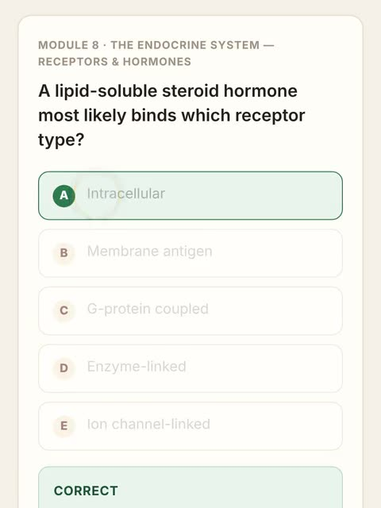
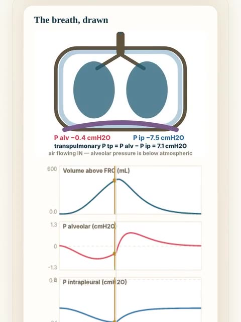
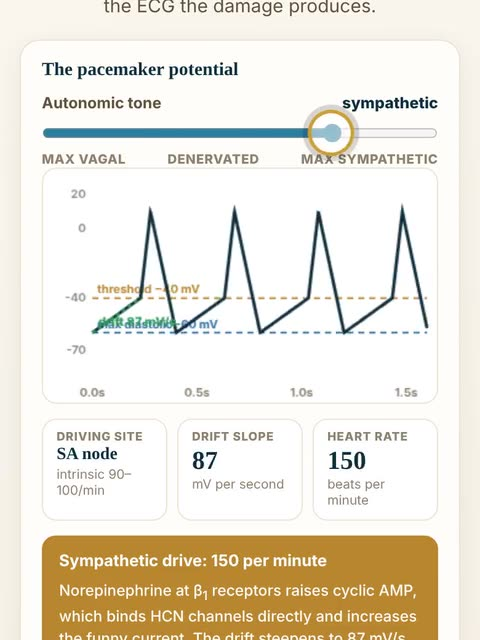
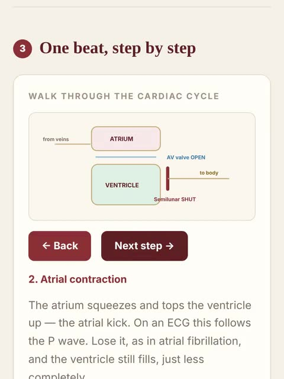
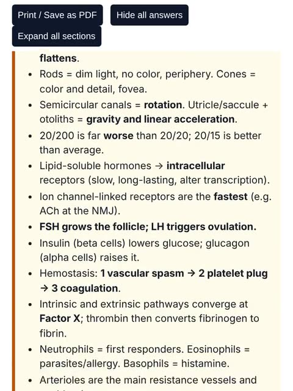
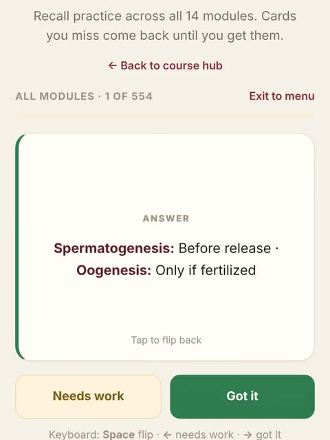
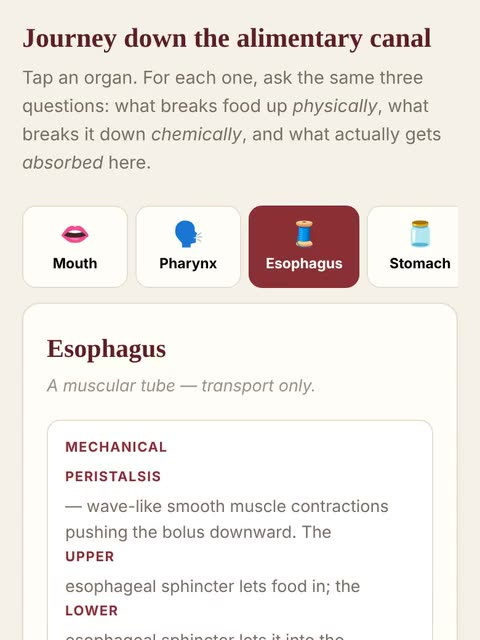

Exam 1
50 questionsM1 Introduction to Physiology & the Chemical Level · M2 The Cellular Level of Organization
Everything for BIO 262 in one place: 693 original practice questions with slide references, module guides, labs and games.
Each card shows the tool in action. Tap one to open it.
Swipe for more.

693 questions. Every rationale cites the lecture slide.
Open
14 modules, 70 built-in simulations, and the whole book as a PDF.
Open
70 interactive benches. All 14 modules, direct access.
Open
14 module lessons. Interactive, with a Download PDF on every page.
Open
14 module reviews and 6 exam reviews. Print to PDF.
Open
554 cards. Complete sets for all 14 modules.
Open
Modules 13 and 14, the final-only material.
OpenEvery game uses the course questions and explains every answer.
Swipe for more.
Everything for one module in a single row: the lesson, the book chapter, the labs, the review guide, practice and the Chase round.
Each exam has a review guide, a Chase review round and a practice set. Question counts come from the exam blueprint.
M1 Introduction to Physiology & the Chemical Level · M2 The Cellular Level of Organization
M3 Tissues & the Integumentary System · M4 Bones & Skeletal Physiology
M5 Muscle Tissue & Nervous Tissue · M6 Brain, Action Potentials & the Autonomic Nervous System
M7 Special Senses — Vision, Hearing & Equilibrium · M8 The Endocrine System — Receptors & Hormones · M9 Blood & Blood Vessels
M10 The Heart · M11 The Lymphatic & Immune Systems · M12 The Respiratory System
All 14 modules, cumulative, with Modules 13 and 14 weighted heaviest (16 questions each).